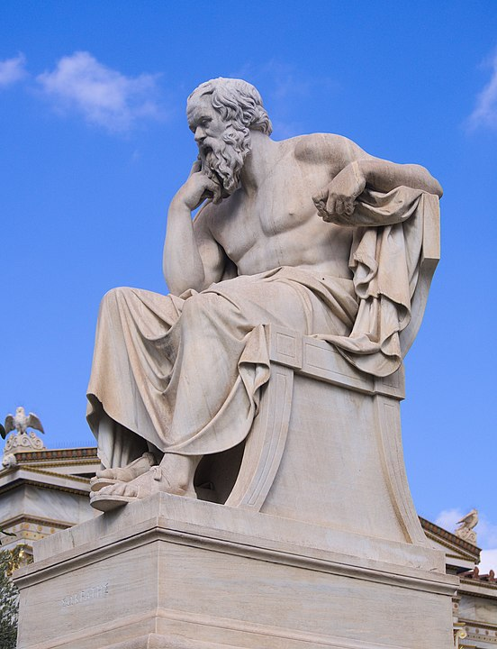

Добро пожаловать
Это веб-прилодение предназначено для внутреннего пользования Музея древностей. С его помощью вы сможете просматривать, дополнять, изменять музейную коллекцию артефактов.
Поскольку музей состоит из нескольких этажей, которые, в свою очередь, подразделяются на отдельные секции, то имеется возможность совершать все те же действия с этажами и секциями, что и с артефактами.
Для того чтобы начать работу, выберите справа из меню возможные функции.
